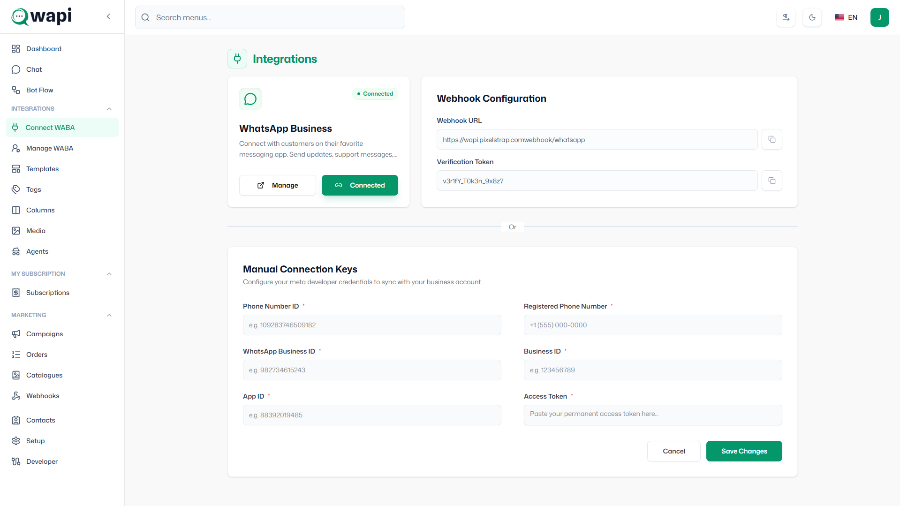

Connect WABA
Connect WABA
1. Overview
Connecting your WhatsApp Business Account (WABA) is a strictly required step before you can start messaging your customers. This integration successfully links your business number to the Wapi Workspace, allowing you to manage customer conversations, send broadcast campaigns, and use automation tools directly from the platform.

2. Connection Methods
The platform provides three different ways to connect your WhatsApp Business API account. Below is a detailed guide for each method.
Method A: Embedded Signup (Recommended)
This is the official Meta onboarding flow and the easiest way to connect your account. It requires absolutely no developer setup, provides automated configuration, and ensures secure Meta login.
Step 1: Start Signup from Your App (WAPI / SaaS)
- User clicks "Connect WhatsApp".
- Your system securely triggers the Meta Embedded Signup (Facebook Login flow).
[Image: Step 1 - Screenshot showing the Connect WABA page and the 'Connect' button]
Step 2: Meta Authentication (Facebook Login)
- A secure popup window opens (Meta OAuth).
- User logs in with their Facebook account.
- Grants required permissions to your app.
- → Your platform never sees their credentials.
[Image: Step 2 - Screenshot of the Facebook login popup window on Meta]
Step 3: Select or Create Business Manager (Portfolio)
User chooses to either:
- Select an existing Meta Business Account.
- OR create a new one directly within the flow.
Note: This Meta Business Account will own the WhatsApp assets.
[Image: Step 3 - Screenshot showing the Meta Business Manager selection screen]
Step 4: Select or Create WhatsApp Business Account (WABA)
User chooses WABA connection options:
- Use an existing WABA.
- OR create a new WABA. (If new, the user enters business details like name and category).
[Image: Step 4 - Screenshot of the WABA selection or creation step on Meta]
Step 5: Create WhatsApp Business Profile
Add the profile specifics that customers will see:
- Display name (Must follow Meta's strict naming guidelines).
- Business category.
- Business description.
[Image: Step 5 - Screenshot showing the business profile details input field on Meta]
Step 6: Add & Verify Phone Number
User enters the business phone number they wish to use.
- Verification is completed via SMS OTP OR Voice call.
- Once verified, the number gets officially registered to the WABA.
[Image: Step 6 - Screenshot of the OTP verification screen on Meta]
Step 7: Permission Sharing to Your App (WAPI)
User approves access so your SaaS (WAPI) gets permission to manage messaging:
- Access to WABA ID.
- Access to Phone Number ID.
- Messaging permissions.
[Image: Step 7 - Screenshot of the Meta permissions grant screen]
Step 8: Auto Configuration (Behind the Scenes)
After a successful Meta connection, the system automatically generates and configures:
- WABA ID
- Phone Number ID
- Access Token
- Webhooks & API access are configured instantly and automatically.
[Image: Step 8 - Screenshot showing the automatic configuration processing]
Step 9: Finish Signup → Redirect Back to Your App
The popup closes and the user returns to your dashboard.
- The WhatsApp number is now fully connected and ready for messaging.
[Image: Step 9 - Screenshot showing the connected success state in Wapi]
Method B: QR Code Connection
A scan-based linking method designed for quick connections without logging into Facebook on your desktop.
- When to use it: When you already have the WhatsApp Business App and want to instantly link it to the platform.
- Step 1: Click on the "Connect via QR Code" tab.
- Step 2: Scan the displayed QR code using your WhatsApp mobile application.
- Step 3: Confirm the linking on your mobile device.
[Image: QR Connection - Screenshot of the QR Code scanning process]
Method C: Manual (Cloud API)
Designed for advanced users and developers who have already configured a Meta App in the Meta Developer Portal. To connect manually, you will need to map several IDs and a token from Meta to Wapi.
1. Phone Number ID & WhatsApp Business ID
Where to find it: Go to the Meta Developer Portal → Select your App → WhatsApp → API Setup. Both IDs are listed under the "Send and receive messages" section.
- Phone Number ID: The unique identifier for the specific phone number you registered.
- WhatsApp Business Account ID: The ID for your overall WABA.
[Image: Meta portal showing Phone Number ID & WABA ID]
2. Business Manager ID
Where to find it: Go to Meta Business Settings → Business Info. The ID is displayed below your business name.
[Image: Meta Business Settings showing Business Manager ID]
3. App ID
Where to find it: Go to the Meta Developer Portal → App Dashboard → App Settings → Basic. The App ID is located at the top of the page.
[Image: Meta Developer Portal showing App ID]
4. Permanent Access Token
Where to find it: Go to Meta Business Settings → Users → System Users. Create a new System User, verify they have the `whatsapp_business_management` and `whatsapp_business_messaging` permissions, and generate a new token. Do not use temporary tokens from the App Dashboard!
[Image: Meta Business Settings showing System User Token generation]
5. Registered Phone Number
Where to find it: Enter the exact phone number (with country code) that you registered in the Meta Developer Portal under WhatsApp → API Setup.
[Image: Meta Portal showing registered Phone Number]
3. WhatsApp Business API Setup Guide (Manual Flow)
Complete these steps in your Meta Developer account to activate WAPI.
01 Register a Business Phone Number
Use a valid phone number that is NOT currently connected to another WhatsApp account. This number will be registered under your Meta Business Manager for WhatsApp messaging.
How to Register your Phone Number:
- Ensure your phone number can receive an SMS or voice call.
- It must NOT be actively connected to the standard WhatsApp or WhatsApp Business App (you must delete those accounts first if it is).
- Go to the Meta Developer Portal → select your App.
- Navigate to WhatsApp → API Setup in the left sidebar.
- Scroll down to "Step 5: Add a phone number" and click the Add phone number button to initiate verification.
[Image: Manual Step 01 - Screenshot showing the API Setup page and Add Phone Number button]
02 Create & Configure a Meta App
Log in to Meta for Developers and create a new Business App. Add the WhatsApp product, link your Business Manager account, and ensure your app is set to LIVE mode.
Steps to Create your Meta App:
- Go to developers.facebook.com and log in.
- Click My Apps → Create App.
- Select Other → Business as the app type and click Next.
- Enter your App Name, App Contact Email, and select your Business Account. Click Create App.
- On the Add Products page, scroll down to WhatsApp and click Set Up.
- At the top of the screen, toggle the App Mode from Development to Live.
[Image: Manual Step 02 - Screenshot showing the Meta Apps creation process and toggling to Live Mode]
How to Create a New WABA Account (If you don't have an existing one):
- Go to Meta Business Settings → Accounts → WhatsApp Accounts.
- Click the Add button and select "Create a WhatsApp Business Account".
- Fill in your business name, timezone, and currency.
- Your WABA is now created and ready to be linked to your Meta App!
[Image: WABA Creation - Screenshot showing Meta Business Settings adding a new WhatsApp business account]
03 Generate Permanent Access Token
Create a System User in Business Manager, assign WhatsApp permissions, and generate a permanent access token. You will need this token to connect with WAPI.
Token Generation Steps in Meta:
- Go to Meta Business Settings → Users → System Users.
- Click Add to create a new System User (assign the 'Admin' role).
- Click Add Assets → Apps → Select your Meta App → Grant 'Full Control' permission.
- Select the System User, then click Generate New Token.
- Select your App from the dropdown list. Check the boxes for
whatsapp_business_managementandwhatsapp_business_messagingpermissions. - Click Generate Token and copy the token locally immediately (it will not be shown again).
[Image: Manual Step 03 - Screenshot of System Users generating the permanent access token]
04 Configure Webhook URL
To receive real-time messages and status updates, add your Webhook URL, set a secure Verification Token, and subscribe to message events in your Meta App settings.
Webhook Configuration Steps in Meta:
- Open the Meta Developer Portal and go to your App Dashboard.
- Navigate to WhatsApp → Configuration in the left sidebar.
- Under "Webhook", click Edit.
- Enter the exactly matched Webhook URL and Verification Token provided by WAPI, then click Verify and Save.
- Click Manage next to the Webhook fields, and subscribe to the
messagesevent.
[Image: Manual Step 04 - Screenshot showing Webhook Configuration and subscribing to messages]
05 Verify & Test Connection
After entering all required credentials, save your configuration and send a test message to confirm validation and check connection status.
[Image: Manual Step 05 - Screenshot showing a successful test message validation]
4. Webhook Configuration (Step-by-Step)
Webhooks are strictly essential for receiving real-time data from WhatsApp (such as incoming customer messages and read receipts).
Step 1: Open Meta App Configuration
Log into the Meta Developer Portal, select your App, and navigate to WhatsApp → Configuration.
[Image: Webhook Step 1 - Screenshot of Meta App Dashboard opening WhatsApp Configuration]
Step 2: Edit Webhook Settings
Under the Webhook section, click Edit.
[Image: Webhook Step 2 - Screenshot of clicking Edit Webhook]
Step 3: Enter WAPI Details
Paste the Webhook URL and Verification Token provided in your Wapi dashboard. Click Verify and Save.
[Image: Webhook Step 3 - Screenshot of pasting Webhook URL and Verification Token and saving]
Step 4: Subscribe to Message Events
Click Manage next to the Webhook fields, find the messages row, and
click the subscribe toggle to ensure you receive incoming chats.
[Image: Webhook Step 4 - Screenshot of subscribing to message events]
5. Connection Status
You can quickly monitor your connection health via the status indicator on the WABA card:
- Not Connected: No active configuration exists. You cannot send or receive messages.
- Connected: Your numbers are perfectly linked, verified, and ready to send messages.
- Error / Action Required: Your authentication may have expired, or your account might have a policy violation requiring attention in the Meta Business Suite.
6. Best Practices
- Use Embedded Signup for beginners: It drastically reduces setup time and automatically configures complex webhooks behind the scenes entirely for you.
- Keep your Access Token secure: If using the manual connection, treat your System User access token exactly like a password. Never share it publicly.
- Verify webhook properly: Ensure your webhook subscriptions are explicitly checking the `messages` fields so you don't miss customer replies.
7. Tips & Notes
- Recommended Method: We strongly recommend using the Embedded Signup process as the absolute fastest and easiest way to onboard.
- Business Requirement: You must have a verified Meta Business Account to lift messaging limits and achieve official Business verification.
- Phone Number Clean Slate: The phone number you connect must not be actively registered on the standard consumer WhatsApp app or the free WhatsApp Business app. You must delete the account from those mobile apps before successfully connecting to the API.